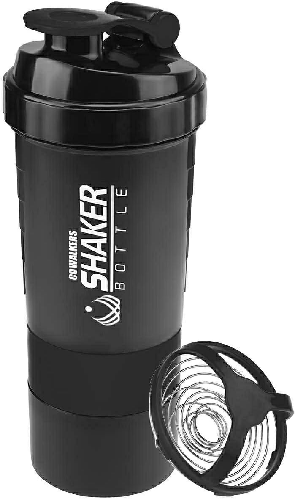
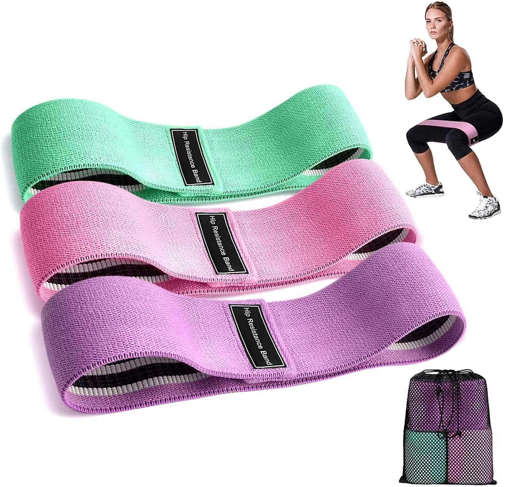
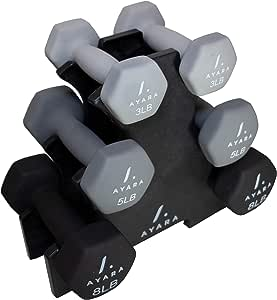
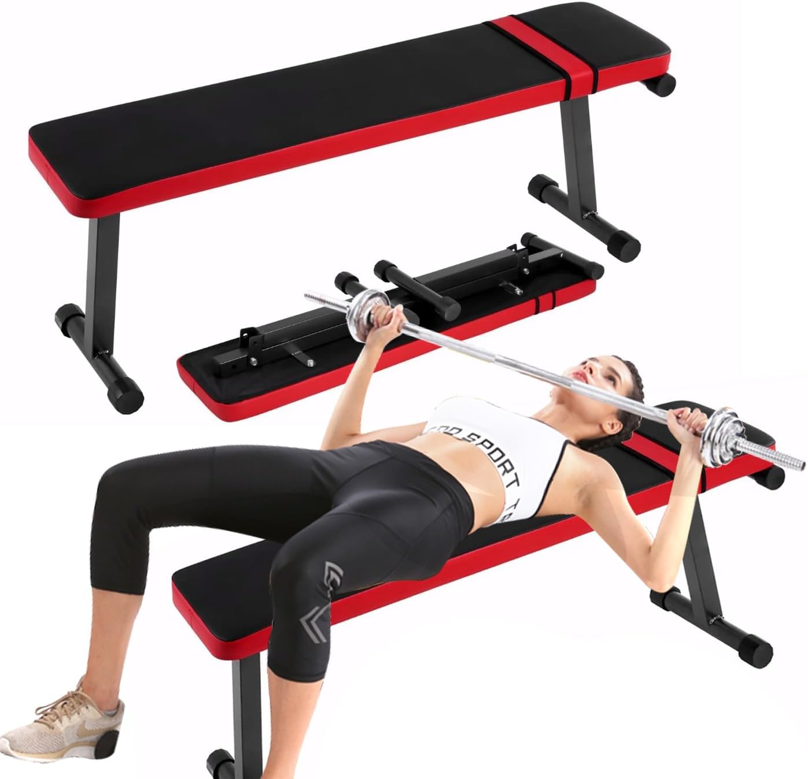
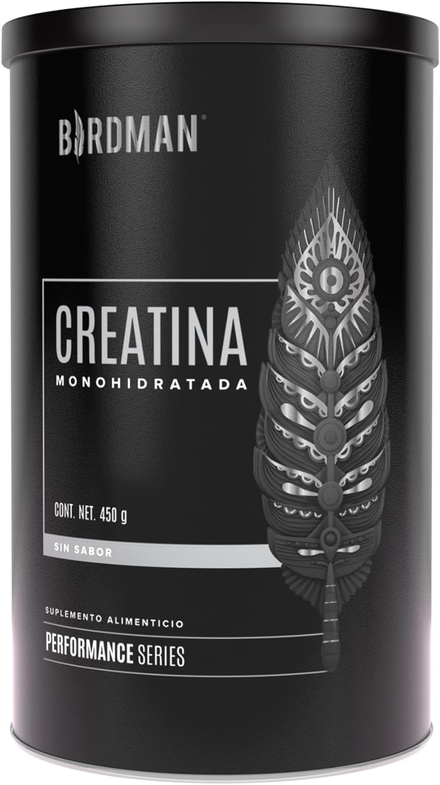
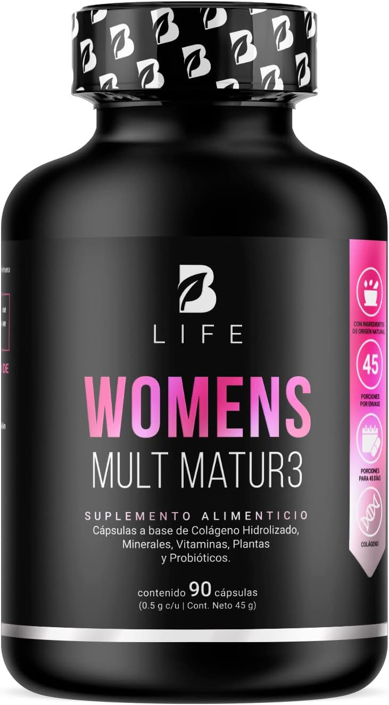
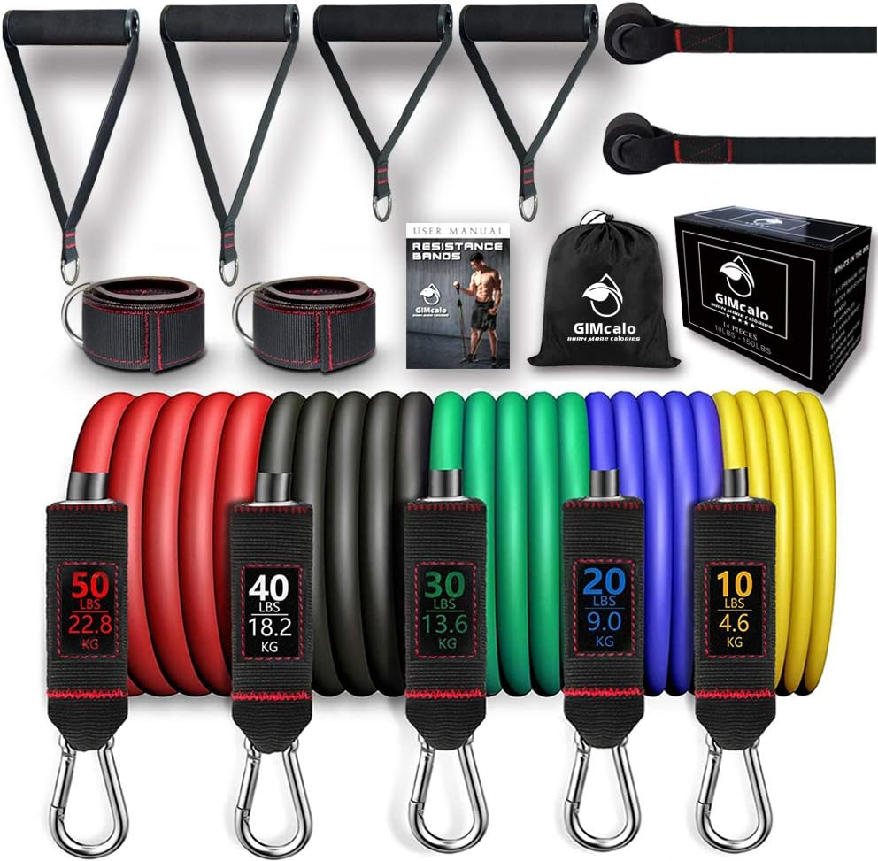
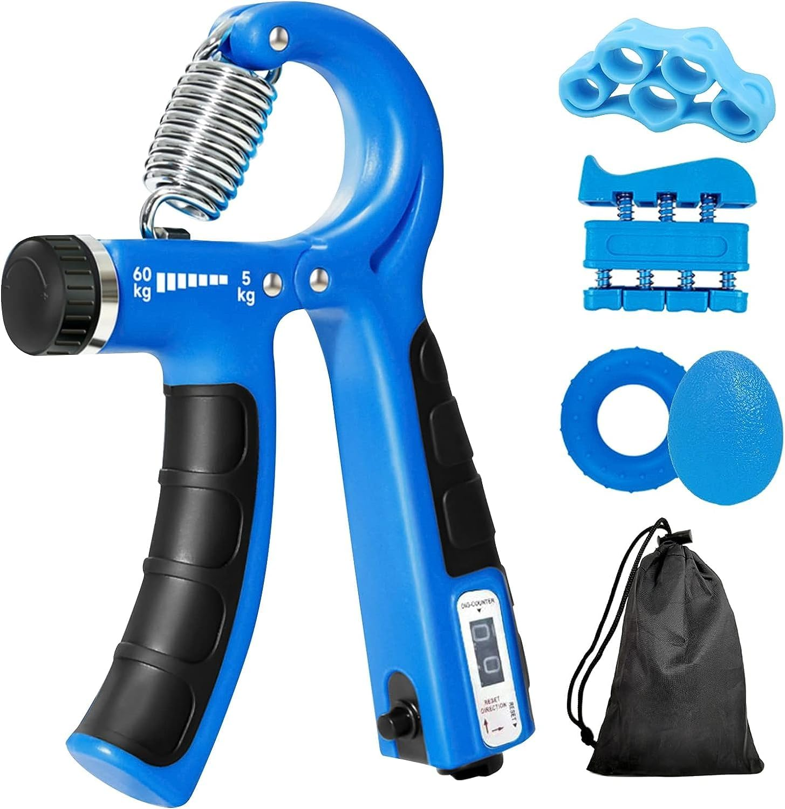
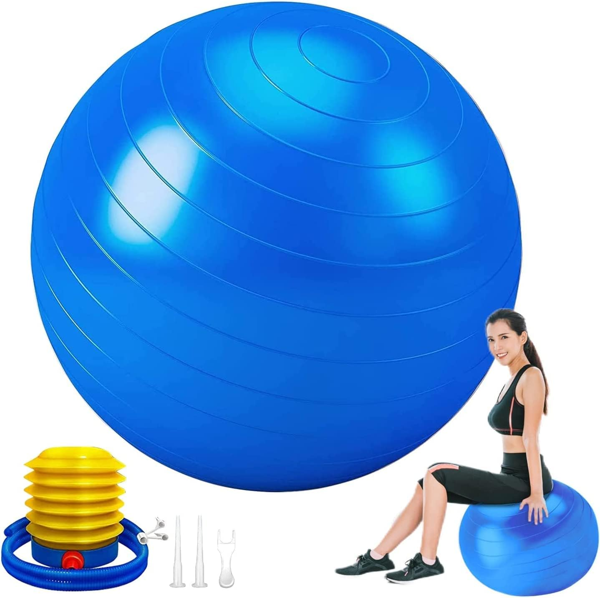

Zapatillas de correr Nike Revolution 5, Nike, Hombre
Acerca de este artículo
Plantilla blanda
Forro blando.
La suela de goma proporciona una tracción duradera en varias superficies
$1,952.62

CoWalkers Botella para Proteina Gym de Coctelera con mezclador, almacenamiento de giro y bloqueo de 3 capas,
100% libre de BPA Prueba de fugas Fitness Deportes Nutrición Suplementos 650ml(Negro)
Marca CoWalkers
Tipo de botella Botella agitadora
Color Negro
Capacidad 650 Mililitros
Característica especial A prueba de fugas
Acerca de este artículo
MATERIAL PARA GRADO DE ALIMENTOS: Copa de coctelera de proteínas sin BPA y sin ftalatos, 100% material de grado alimenticio, ecológico, seguro para beber, apto para lavavajillas Aprobado por la FDA.
Perfecto para deportes de gimnasio, marcas fáciles de medir tanto en onzas como en mililitros.
$219.00

3 pcs Bandas de Resistencia,Salandens Bandas de Ejercicio Cadera con Resistencia de Botín, Bandas de Círculo Ejercicio Para Piernas Y Glúteos Gruesos,
Bandas De Resistencia En Látex Natural para Deporte Ejercicios Rehabilitación Yoga (Rosa+Púrpura+Verde)
Marca Salandens
Material Algodón
Color Rosa+Púrpura+Verde
Dimensiones del artículo Largo x ancho x alto 14,5 x 11,5 x 7 centimeters
Estilo Pull upAcerca de este artículo
💪【Construye un Cuerpo Perfecto】- Las mejores bandas de resistencia para caderas, glúteos y piernas, ya que estas bandas de cadera de resistencia podrían ayudarlo a realizar sentadillas correctamente para obtener caderas esculpidas y bien tonificadas. Quema tu grasa, cualquiera que quiera aumentar la movilidad o la resistencia muscular
y la fuerza puede usar estas bandas de ejercicio para tu entrenamiento.
$198.00

AYARA Set 6 Mancuernas Fitness de Neopreno Hexagonales con Base Incluida,
Ideal para Ejercicio en Casa, Entrenamiento y Gimnasio para hombres y mujeres,
Marca AYARA
Color Multicolor
Material Neopreno, Hierro
Dimensiones del producto 19,5L x 6W centimeters
Estilo Fixed
Acerca de este artículo
💪 En Equilibrio: Lleva tu rutina de entrenamiento en casa al siguiente nivel con estas mancuernas de calidad superior, que van desde 3 a 8 LB, con colores neutros que te incitan a levantarlas. ¡Hagas lo que hagas, hazlo intensamente!
💧 Comodidad y facilidad de uso: ¿Te sudan las manos? El recubrimiento Premium de Neopreno soporta el uso diario sin dejar de verse bien, pero además,
estas pesas son menos resbaladizas para que puedas manejar las pesas incluso cuando estás sudando.
$999.00

Banco para Ejercicio,Banco de Pesas Plegable,
EjercicioBíceps y Tríceps para Sports Hogar y el Gimnasio, Ideal para Musculación y Fitness.
Marca AUOK
Material Plástico
Color Negro rojizo
Dimensiones del producto 108D x 35W x 14H centimeters
Material del marco Aleación de acero
Límite de peso 200 Kilogramos
$1,299.00

Birdman Creatina Monohidratada de Alta Pureza En Polvo Sin Sabor,
Preworkout, Alto Rendimiento | 90 Servicios | 450g.
Marca BIRDMAN
Sabor Sin sabor
Tipo de suplemento primario No específico
Cantidad de unidades 1.00 unidad
Forma del artículo Polvo
Peso del producto 450 Gramos
Dimensiones del artículo Largo x ancho x alto 10 x 10 x 16 centimeters
Forma de dosificación Polvo
Característica del material Vegetariano
$478.55

Multivitamínico para Mujer Mayor de 40 años con 90 Cápsulas. Ingredientes naturales: Colágeno,
Inositol, Maca, Probioticos. Womens Multi Mature B Life.
Marca B Life Company
Forma del artículo Capleta
Sabor Sin sabor
Rango de edad (descripción) Adulto
Cantidad de unidades 90.00 unidad
$239.20

GIMCALO Bandas de Resistencia, Bandas de Resistencia multifuncionales para Entrenamiento de Fuerza y Equipos de Fitness.
Ligas de Resistencia Pesada de 150 Libras apilable Ejercicio
Marca GIMCALO
Material Caucho natural
Color Amarillo / azul / verde / negro / rojo
Deporte Baloncesto, fútbol, boxeo, entrenamiento físico.
Nombre del modelo 150 LIBRAS
$599.00

Kit de refuerzo de agarre de mano de 5 piezas con agarre de mano de conteo ajustable/bandas extensoras de resistencia de camilla de dedo/ejercicio de dedo/anillo de fuerza de agarre y
bola de alivio de estrés para entrenador muscular y recuperación de lesiones
Color Azul
Material Metal
Marca IMLUCKY
Estilo Ajustable
Dimensiones del artículo Largo x ancho x alto 18 x 5 x 11 centimeters
$199.99

NEWKIBOU Pelota de Ejercicio,Pelota de Pilates 55/65/75cm-Fitball Anti-Burst,para el Embarazo,
Pilates,Yoga,para Ejercicios Abdominales y Ejercicios básicos,Incluida La Bomba de Aire
Marca NEWKIBOU
Material Cloruro de polivinilo (PVC)
Color Azul
Acerca de este artículo
【Material superior】pelota de pilates está hecha de material de PVC hipoalergénico de alta calidad, Libre de BPA (sin bisfenol A), producido sin plastificante | Espesor: 2000 micrómetros | Soporta hasta 300 kg | Antideslizante gracias a su superficie rugosa | Se incluye en el envío: NEWKIBOU Pelota de yoga para inflar,
bomba de aire para usar con las manos o los pies, tapón de cierre